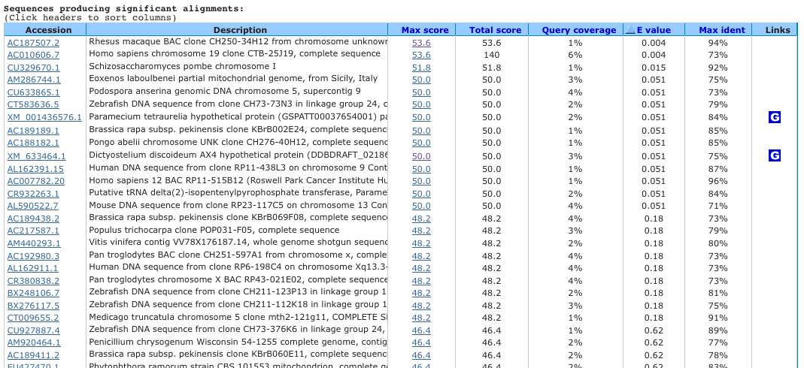

Les fourmis sont parmis les especes les plus repandues sur terre; leur succes lie a des manieres d'organiser la vie en societe dont la complexite est proche des notres. Deux formes sociales coexistent chez la fourmi de feu Solenopsis invicta: la forme monogyne (avec une seule reine), et la forme polygyne (avec jusqu'a une centaine de reines). Lorsqu'une nouvelle reine tente de s'introduire au sein d'une colonie etablie, elle est parfois acceptee, parfois executee par les ouvrieres. L'equipe du professeur Keller de l'UNIL a montre que le choix des reines et de leur nombre depend des alleles d'un seul gene au sein des ouvrieres.
Ce gene s'apelle Gp-9 et servira d'objet d'etude pour ce TP:
>gi|17981782 Gp-9 spliced coding sequence ATGAAGACGTTCGTATTGCATATTTTTATTTTTGCTCTCGTGGCTTTCGCTTCTGCATCTCGTGATAGCG CGAGGAAGATAGGATCCCAATATGACAATTACGCGACTTGCTTAGCCGAACATAGTCTAACAGAGGATGA CATCTTCTCGATTGGTGAAGTATCAAGTGGCCAGCACAAAACCAATCATGAAGATACCGAACTACACAAA AATGGTTGCGTCATGCAATGTTTGTTAGAAAAAGATGGACTGATGTCTGGAGCTGATTATGATGAAGAGA AAATGCGTGAGGACTATATCAAGGAAACAGGTGCTCAACCAGGAGATCAAAGGATAGAAGCTCTGAATGC CTGCATGCAAGAAACAAAAGACATGGAGGATAAATGTGACAAAAGCTTGCTCCTTGTAGCATGTGTCTTA GCAGCTGAAGCTGTGCTCGCCGATTCTAACGAAGGAGCATAA
Pour essayer de comprendre le fonctionnement de ce gene on a effectue un BLASTN. Voici un extrait de l'alignement obtenu avec l'une des sequences retournees par BLAST:
Gp-9 613 CGTATATAAATTTTAAAATCTAAGGAAAATTGTTTTATTTTAATTATATCTAAAAAATTG 672
|||| ||| || | | ||| |||| ||||||||||||||||||||||
Sbjct 1246 ATAATATTTATTATATAGT--------AAT--TTTTCCTTTAATTATATCTAAAAAATTG 1295
| ? Et les - ?Pour determiner le degre de similarite de deux sequences, BLAST calcule le bitscore de l'alignement. Dans BLASTN, chaque identite vaut +1, et chaque difference vaut -3. Insertions et deletions n'affectent pas le score.
BLAST convertit ensuite le score de votre alignement en bitscore "standardise", puis en E-value. Vous trouverez les formules correspondantes dans votre cours. Pour les calculs on prendra: n = la taille de Genbank Nucleotide soit 89*10e9 nucleotides, K = 0.63 et lambda = 1.61
La recherche BLAST a aussi donne d'autres resultats, resumes dans le tableau ci-dessous.
 Comparez les valeurs calculees a celles du tableau.Il existe diverses variantes de BLAST. Grace a une autre recherche par BLASTP, vous savez que la sequence Gp-9 est apparentee a K2000. Mais a votre grand desarroi, celle-ci n'avait pas ete trouvee par BLASTN. En utilisant un autre algorithme (cf chapitre 4 du cours), vous obtenez malgre tout l'alignement des deux sequences au niveau nucleotidique:
Gp-9 1 ATGAAGACGTTCGTATTGCATATTTTTATTTTTGCTCTCGTGGCTTTCGCTTCTGCATCT 60
||||||||||| |||||||||| ||||||||| |||||||| |||||||||| |||||
K2000 1 ATGAAGACGTTGGTATTGCATAATTTTATTTT---TCTCGTGGATTTCGCTTCTCCATCT 57
Gp-9 61 CGTGATAGCGCGAGGAAGATAGGATCCCAATATGACAATTACGCGACTTGCTTAGCCGAA 120
||||| ||||||| || ||| ||||||||| |||||| |||||| ||||||||| |||||
K2000 58 CGTGAGAGCGCGAAGACGATGGGATCCCAACATGACATTTACGCCACTTGCTTACCCGAA 117
Gp-9 121 CATAGTCTAACAGAGGATGACATCTTCTCGATTGGTGAAGTATCAAGTGGCCAGCACAAA 180
|||| ||||| || |||| || | ||||||||| ||||||||| |||||||||| |||||
K2000 118 CATAATCTAAGAGGGGATAACGTTTTCTCGATTCGTGAAGTATAAAGTGGCCAGGACAAA 177
Gp-9 181 ACCAATCATGAAGATACCGAACTACACAAAAATGGTTGCGTCATGCAATGTTTGTTAGAA 240
|||| ||||||||| |||||||| ||||||||| || ||||||| |||||||| ||||||
K2000 178 ACCAGTCATGAAGAAACCGAACTCCACAAAAATCGTCGCGTCATACAATGTTTATTAGAA 237
Gp-9 241 AAAGATGGACTGATGTCTGGAGCTGATTATGATGAAGAGAAAATGCGTGAGGACTATATC 300
|||||||| |||||| ||| ||| ||||||||| ||| |||||||||| |||||||||
K2000 238 TAAGATGGAATGATGTGTGGGGCTAATTATGATGGAGAAAAAATGCGTGCTGACTATATC 297
Gp-9 301 AAGGAA------ACAGGTGCTCAACCAGGAGATCAAAGGATAGAAGCTCTGAATGCCTGC 354
| |||| || |||| |||||||||| |||| |||| |||| |||||||||| | |
K2000 298 AGGGAATCAGGTACCGGTGGTCAACCAGGACATCAGAGGAGAGAACCTCTGAATGCGTAC 357
Gp-9 355 ATGCAAGAAACAAAAGACATGGAGGATAAATGTGACAAAAGCTTGCTCCTTGTAGCATGT 414
||||||||| ||||||| ||| ||| |||||| ||||||||| | || ||| |||||
K2000 358 ATGCAAGAATCAAAAGATATGCAGGTTAAATGGCACAAAAGCT---TTCTAGTAACATGT 414
Gp-9 415 GTCTTAGCAGCTGAAGCTGTGCTCGCCGATTCTAACGAAGGAGCATAA 462
| |||||||| | |||||| ||||| |||||| ||||||||| ||||
K2000 415 ATTTTAGCAGCGGGAGCTGTTCTCGCGGATTCTCACGAAGGAGAATAA 462
Le site americain du National Centre for Biotechnology Information (NCBI) regroupe de nombreux outils utilises tous les jours par plus de 1,000,000 biologistes de part le monde. L'un d'entre eux est le portail BLAST. Utilisons la sequence genomique entiere de Gp-9:
>gi|17981782|gb|AF427893.1| Gp-9 genomic sequence TTAATAATGAAGACGTTCGTATTGCATATTTTTATTTTTGCTCTCGTGGTGAGTTCTATTTTATAATAAT TAAATATTAGTATAAAATTTTTCTGTTTAATTTAGTAATGTATAATACAATAATGTGTTTTGCAACTTAA TTATAAATAAATTATAAGTATTACAATGCCCTTATTGCATGTAGACATATATTATAATGTCTACACGTTT GTTTATATTATAAGAAGATAATATTTTACGTTTATTTATACTTGTGCATGAAATAAAACTTAATTAAAAT AAGCAAAATAAAATTCCAAATCTAGGCTTTCGCTTCTGCATCTCGTGATAGCGCGAGGAAGATAGGATCC CAATATGACAATTACGCGACTTGCTTAGCCGAACATAGTCTAACAGAGGGTAAGTTATATTAGAGAATTT TACACAATTTACATGTCTTCTTAATTCATAAAGTACAGAAACAGATATTTTATGTTTGATTTTGAACCAA TACCTTTATAATAAAAGTGTATTATATATTATTTCCATATTATATACAGCTTTCTATACTGTATTAAATA TAAAATATTTTAATTACTTATACAAGATTTTTATTAAAAATACATCCCATAACGTATATAAATTTTAAAA TCTAAGGAAAATTGTTTTATTTTAATTATATCTAAAAAATTGTTTACATTTAAAAAATTTATAAATTTTA TATAATTTATATTGAGATTTTAACTATGGCCGCCTCAATAAGATTATTTCACGTCTGTGTTCACACTGCA CTCTCATGTTTGAGTTAAAATCCCAATAGTTTTTAACGTATAAGTCGTGTTTTGTAATTATTTAAGTAGA TACAAATTTAATATTTTCTAAATTTATTTTTTAGATGACATCTTCTCGATTGGTGAAGTATCAAGTGGCC AGCACAAAACCAATCATGAAGATACCGAACTACACAAAAATGGTTGCGTCATGCAATGTTTGTTAGAAAA AGATGGACTGGTAAGTAGCTATTATTTTCTATAAAAAAGAGAATATTTAAAATACAAACTATTACATAAG AAAATAAAACATTGCAAACAAAAATATAATTTTTTTCATAACGTCTTCCCATGTAGACCTATTTAACTTA TTGTTAGAATTGATTTCAATCATTAATTTTATTAAAAAATTAATATTTTTATATACATATATTATCACAT TATACAACATAATTTAATTCAAAAAATAGTACAAAATATCTTATCTTTATTTTAAAACGTAATCTAATGT ATTCAAATTATTGACGTTTTTGTCTTTCTTGTAAATATTAGATGTCTGGAGCTGATTATGATGAAGAGAA AATGCGTGAGGACTATATCAAGGAAACAGGTGCTCAACCAGGAGATCAAAGGATAGAAGCTCTGAATGCC TGCATGCAAGAAAGTAAGTTATAAAATTAGAAAGTAAGTTATAAAATTATACGTATAAGAGTAATTCCGT TAATTATATAAGAAATGTTAACTTTGTTTAATAAAATGTTTTATAGTATTACTTATATACATTATGGCTA TTTAAACATTATAATAAATTTTAAAAAATATGTTATTTTTTGTAACTTAATTATTTTTTTTTCTATTTTA GCAAAAGACATGGAGGATAAATGTGACAAAAGCTTGCTCCTTGTAGCATGTGTCTTAGCAGCTGAAGCTG TGCTCGCCGATTCTAACGAAGGAGCATAAGAAATGCAATTAAAAACAGCTGGCATACAACCATTATATGA AAATTTGCAACATATAGCATTTTAAATAAAGAAATAAAATTATACAGCTTTCTTTTGTATTGACATGTTA AAATAATACTATGAATAAATTTGATTCAATAAAGCAATTTTGTTAAAAAGGAAAAAGGATCAGAATTATC AATTTCTTCATTCTACTACTACTATTTATAATATCATCTCTAAAATCTTGATAAATAGAACAAGTAAATT AACAAAAATGTTAATTAAGATATATGTTCTTTTTGTTTTAATTTATATTTCAGAAATATTATATTTGCAA TATAATAAAGACACGCAATTAACAAATATACGTAAAAATTTCTATGTATCTTTAATATAATAATTATTCT AGTTAAGTATTTTTATTAGATATAAACTTATAAAACTATTTTTCAAACTTTATCTATATGTCAATAGACA AAATATTAGGAATGCTTTAAAGTATACATA
Faites-le.
Si vous n'obtenez aucun resultat, c'est peut-etre parce que le NCBI fait par defaut un MEGABLAST qui utilise une taille de mots tres grande (25). A cause de la limitation que vous avez vu en premiere partie, MEGABLAST ne trouvera rien. Modifiez-donc le Program Selection pour choisir Somewhat similar sequences blastn).
Elargissez la recherche en utilisant la "Nucleotide collection NR" (cette base Non-Redondante est tres vaste.
Il est possible de limiter la recherche par une "Entrez Query" lors de la soumission du BLAST. Entrez filter[all] NOT solenopsis[organism] afin que les resultats de fourmis Solenopsis ne soient pas affiches.
On sait que la sequence nucleotidique degenere beaucoup plus rapidement que la sequence d'acide amines.
Faites le (sans utiliser de contrainte "Entrez Query")
On ne trouve comme resultat presque uniquement les proteines Gp-9 des differentes especes de fourmis Solenopsis. Les trois derniers resultats (avec tres grands E-value) ne sont pas biologiquement pertinents.
Servons-nous desormais de la sequence d'acides amines de Gp-9:
>gi|17981783|gb|AAL51119.1| Gp-9 [Solenopsis invicta] MKTFVLHIFIFALVAFASASRDSARKIGSQYDNYATCLAEHSLTEDDIFSIGEVSSGQHKTNHEDTELHK NGCVMQCLLEKDGLMSGADYDEEKMREDYIKETGAQPGDQRIEALNACMQETKDMEDKCDKSLLLVACVL AAEAVLADSNEGA
Faites-le.
Regardez les alignements faibles (par exemple celui avec une proteine d'Aedes aegypti).
Query?Sbjct?+ ?Quand Gp-9 avait ete identifie, la seule proteine homologue significative etait une "Odorant binding protein"... on peut essayer de s'imaginer comment un tel gene pourrait etre implique dans le choix de reines.